NitroOS builds on ReactOS and adds what you need to use it every day: current 64-bit and 32-bit programs side by side, .NET Framework 4.8, PowerShell 7, NTFS as the default file system and a firewall that is switched on. Latest release: 2026.11-1. Why we are building it.
DownloadSource and changelog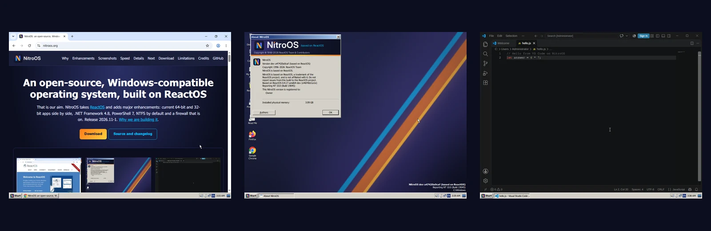
We want an open-source operating system that runs Windows programs well enough to use every day. Building that by hand takes decades: ReactOS has been working on it since 1998, and NitroOS is built on that work. With AI coding agents doing the engineering under a human maintainer, we believe it can take months instead. Our first release came out on 20 October 2026. Three weeks and six releases later, Chrome, Firefox, Edge, VS Code, PowerShell 7 and .NET Framework 4.8 programs run on it.
Our end goal is to merge all relevant work back into ReactOS. ReactOS does not accept AI-generated code today, and we respect that. If its policy changes, we want this work upstream. Until then, NitroOS is a separate open-source (GPL) project; our AI policy explains how we work.
What NitroOS adds to ReactOS, as of release 2026.11-1.
Chrome 157, Firefox 159, Edge, VS Code 1.145 and PowerShell 7.6 install and work. Edge runs with its security sandbox switched on. Screenshots
The 64-bit version also runs 32-bit programs, as Windows does. You can run 64-bit and 32-bit Firefox at the same time; Task Manager marks the 32-bit ones with *32. Screenshots
Programs written for .NET Framework 4.8 run. PowerShell 7 comes preinstalled, including its network, storage, scheduled-task and local-account modules. Screenshots
NitroOS reports itself as Windows 10 (version 10.0, build 19045), so installers that check the Windows version carry on instead of refusing. Screenshots
The Features dialog (or featmgr on the command line) installs extras with one click: PowerShell 7, the Scoop package manager, .NET Framework 4.8, Firefox, an AAC audio decoder, software 3D graphics and WinFsp. Screenshots
Modern terminals work: the VS Code terminal, Windows Terminal and PowerShell 7. Scheduled tasks run, so programs can keep themselves up to date.
Multi-processor support is on by default in both the 32-bit and 64-bit versions, and a 4 GB machine shows 3.99 GB of usable memory. Screenshots
On 64-bit, memory that programs are not using is moved to the paging file, so more programs fit. A program that asks for too much memory gets an error instead of bringing down the whole system.
Up to 134 times faster than the ReactOS code it builds on, in our benchmarks. Numbers
The clock stays accurate even under heavy load (drift of 0.004% or less).
A Windows 7-style Disk Management tool that draws each disk and its partitions. Right-click a partition to create, format, extend or shrink a volume or change its drive letter, or set up a new disk as MBR or GPT. If an option is greyed out, the status bar tells you why. Before it changes anything, it checks that the disk is still the way you saw it, and afterwards it checks the result. Screenshots
A full read/write NTFS driver, based on the Linux kernel's NTFS code, with a journal that recovers the disk after a power cut, and a disk checker. Setup selects NTFS for you. Screenshots
Updated to WinBtrfs 1.10, with our own fixes: disks formatted on current Linux systems open, format /FS:BTRFS works, and drive letters stay the same.
WinFsp installs, so file systems written as ordinary programs can be mounted as drive letters or network paths.
A device you disable stays disabled after a restart (the boot disk is protected from this). If enabling or disabling a device fails, you are told. Installing a new driver for a running device restarts the device so the new driver takes effect. Driver installation runs in a protected system service.
A display driver for virtio-gpu virtual machines, optional software OpenGL and Vulkan on 64-bit, and the first parts of Windows' modern composition interfaces, enough for WebView2 and Edge to draw their windows.
The firewall is on from the first boot. It filters incoming and outgoing traffic, stores its rules the same way Windows does, has the usual Control Panel and Advanced Security tools, and asks you when a blocked program tries to accept connections. Screenshots
Programs running as a standard user can use the network normally. ipconfig and net show the same output as on Windows, and the HTTP Server API, netsh portproxy and TLS through schannel work.
Permissions on the registry, many security fixes across the kernel, the graphics subsystem and networking, and browsers that run inside their security sandbox.
Sharper LCD text, extra open fonts, a Windows-style crash report dialog, copy and paste in the console with Ctrl+C and Ctrl+V or the mouse, and Windows installed to C:\Windows.
NitroOS (64-bit, with NitroOS branding) on freshly installed virtual machines with 4 CPUs, 4 GB of memory and a 1024x768 screen. Shots marked * are from a development build of 9 November, after release 2026.11-1; the others are from the release. These are unedited screen captures. Click a picture to see it full size.
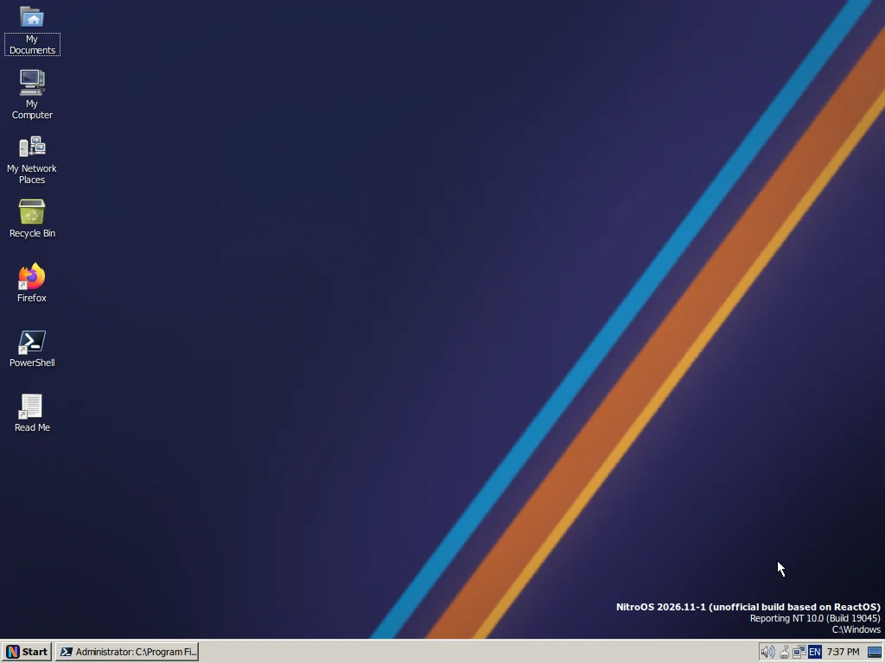
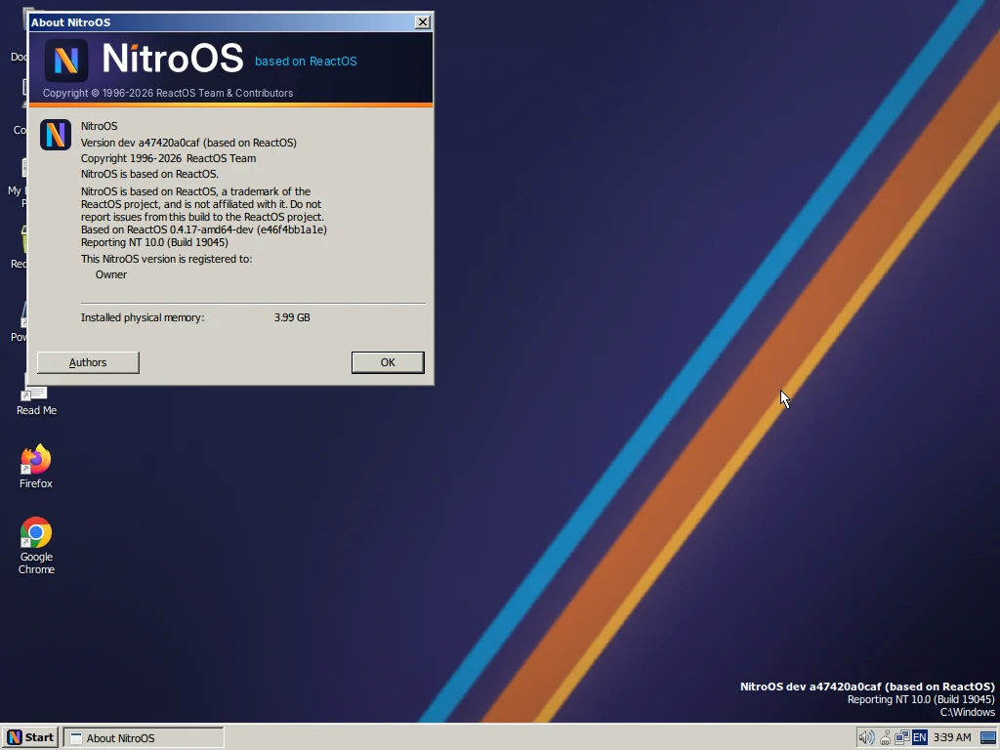
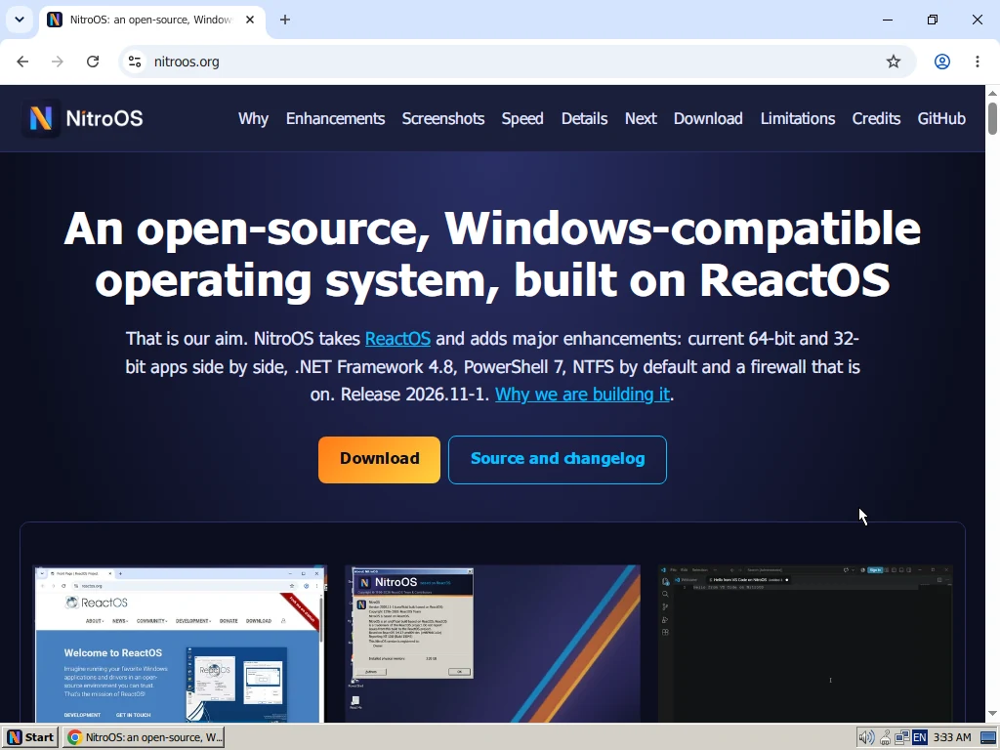
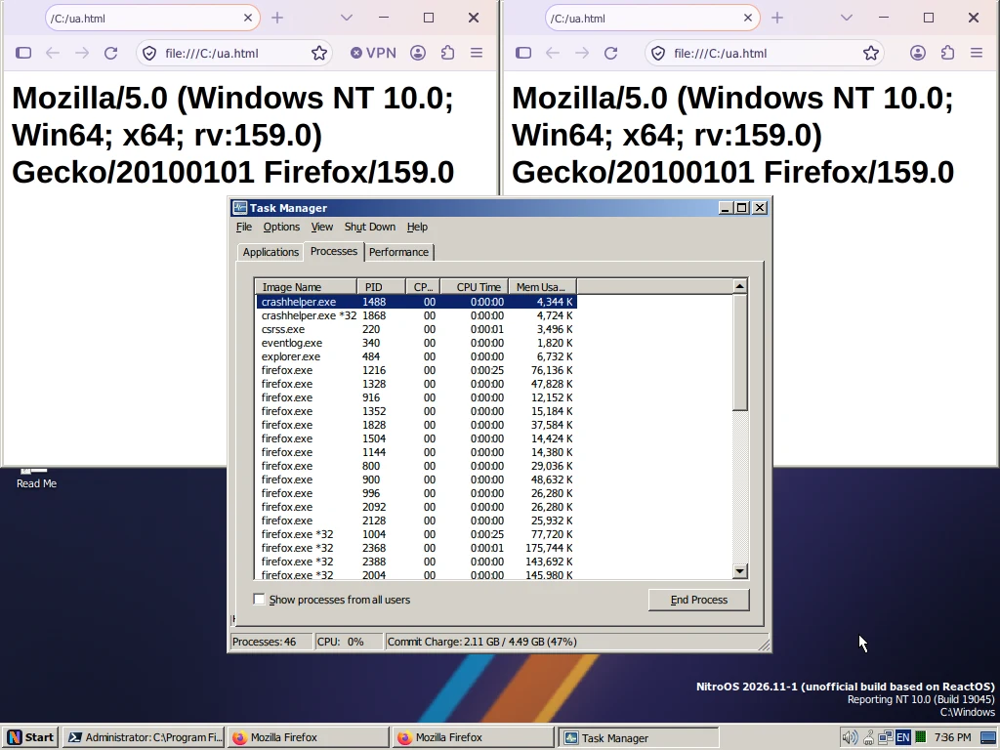
*32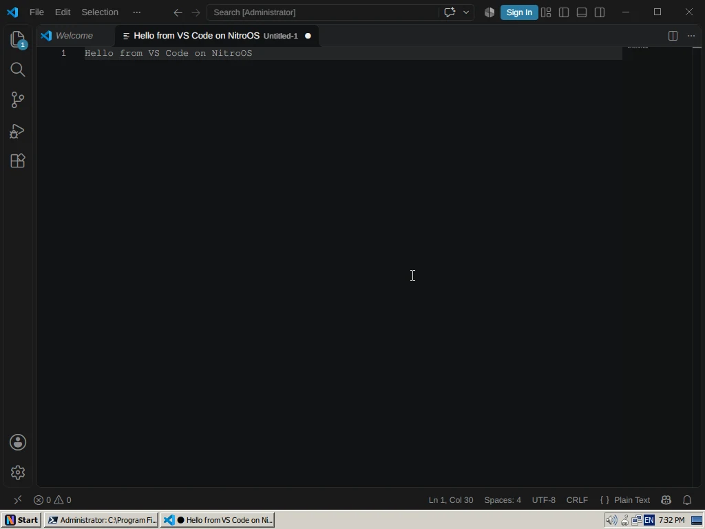
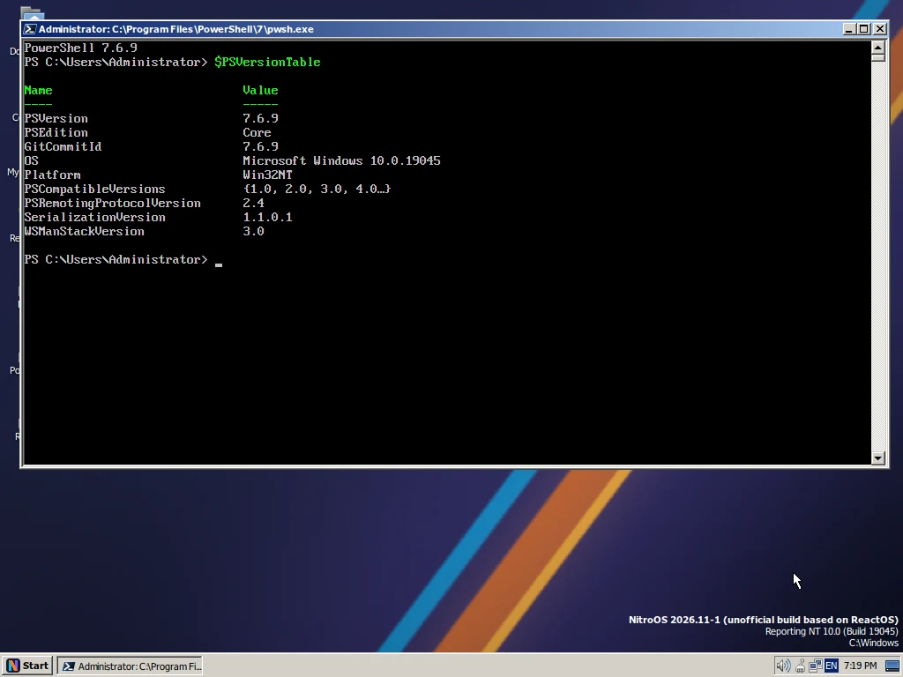
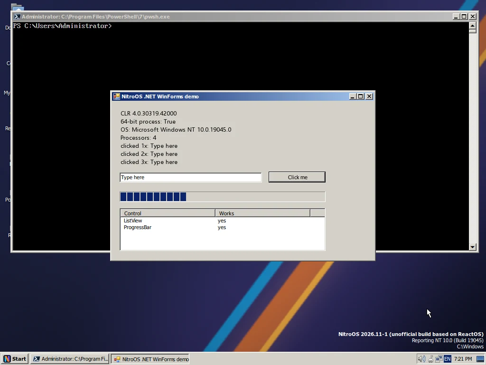
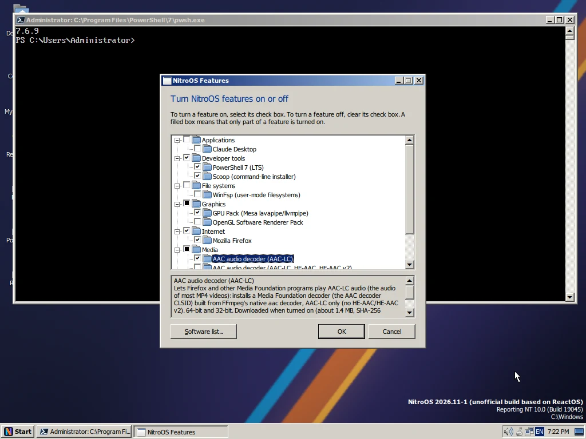
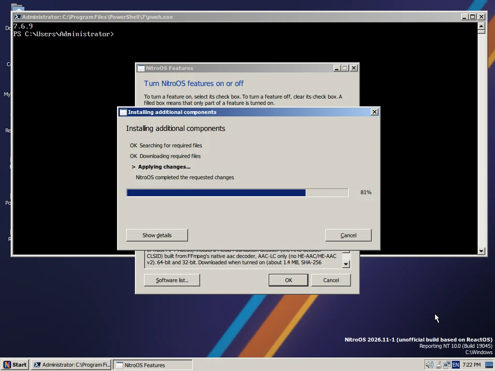
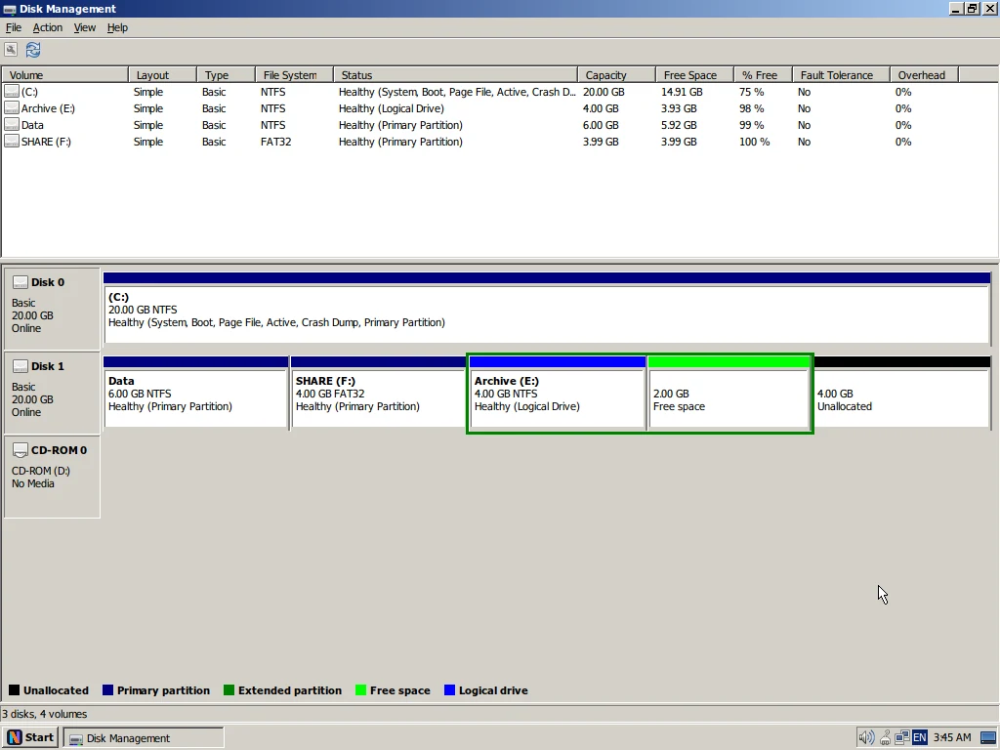
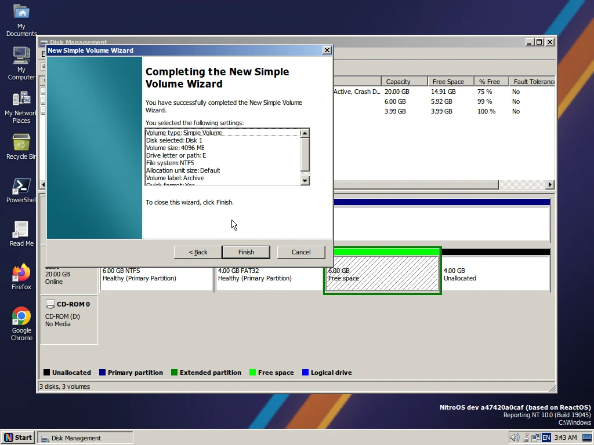
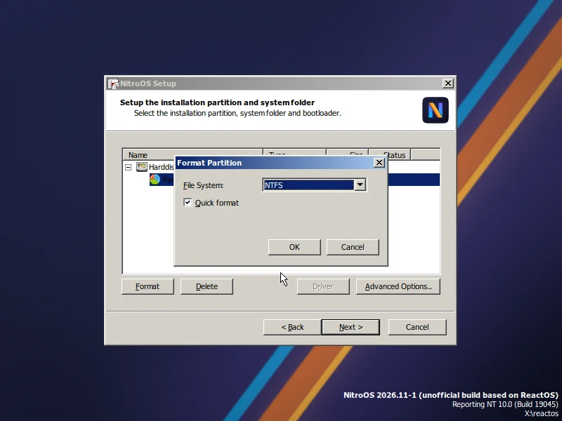
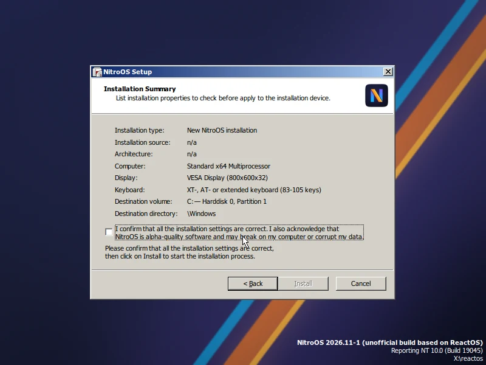
\Windows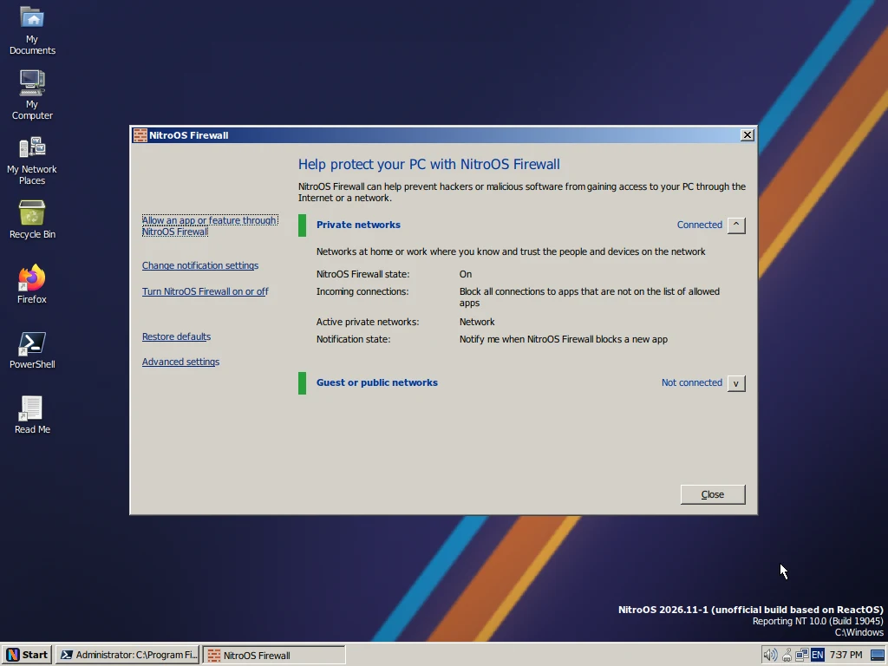
How NitroOS compares with the ReactOS code it is built on: the same test program on the same virtual machine, using the 32-bit version of both. Each row shows how much faster or slower NitroOS is.
| Test | ReactOS | NitroOS | NitroOS is |
|---|---|---|---|
| Memory | |||
| Getting new memory (page faults per second) | 8,500 | 1,142,000 | 134× faster |
| Copy-on-write memory (page faults per second) | 6,700 | 447,000 | 66× faster |
| Memory-mapped files (page faults per second) | 42,900 | 1,115,000 | 26× faster |
| Heap: 1 million allocations and frees | 1.60 s | 0.15 s | 10.6× faster |
| VirtualAlloc: 32,768 commits and decommits | 69 ms | 13 ms | 5.2× faster |
| Heap: 4 threads allocating at once ‡ | 0.45 s | 12.2 s | 27× slower |
| Programs | |||
| Boot to the logon screen | 10 s | 6 s | 1.7× faster |
Start cmd.exe 50 times † | 0.60 s | 0.29 s | 2.1× faster |
| Start 200 processes and wait for each † | 1.69 s | 0.58 s | 2.9× faster |
| 7-Zip built-in benchmark (MIPS, higher is better) † | 3,444 | 22,640 | 6.6× faster |
| Two threads signalling each other ‡ | 51 ms | 583 ms | 11× slower |
| Files | |||
| Read 10,000 small files (FAT) | 95 ms | 183 ms | 1.9× slower |
† These tests use several CPUs. The 32-bit ReactOS build uses only one CPU by default, while NitroOS uses all four, so part of the gain comes from the extra CPUs.
‡ Measured on a development build from before release 2026.11-1. The release's heap and lock improvements make the 4-thread heap test about 30 times faster; the benchmarks will be re-run for 2026.11-2. Small-file reads are being worked on for the same release.
How we measured: on 8 November 2026, on one host (AMD EPYC 9254, QEMU/KVM), with 4 virtual CPUs and 4 GB of memory, taking the median of 5 runs, with both systems on FAT. ReactOS: upstream master 4d1f0148bed. NitroOS: development build a690f0ba892. Raw data: BENCHMARKS.md.
For developers: the main changes and notable bug fixes in 2026.11-1, grouped by area. The release contains 592 changes in total; the changelog lists every one, with a link to its commit.
NitroPager is on by default on amd64: it trims working sets and pages out private memory, with a low-water balancer and its own test suite (i386 keeps it off; NitroPager=0 turns it off). The commit limit is RAM plus the paging files. Placeholder memory (NtAllocateVirtualMemoryEx) is supported.
CcCopyRead and CcCopyWrite keep the shared cache map referenced during the call; the lazy writer could delete it underneath them (bugcheck).Bug fixes in this area: 44
RtlEnterCriticalSection spins up to the section's spin count before it waits, without jumping ahead of queued waiters, and user-mode heaps get a small-block front end. Under contention, the heap is about 30 times faster.
Foreground boost and quantum changes, amd64 user hardware breakpoints and debug registers, XState contexts that match Windows, QPC in user mode, NtSetInformationKey, and NtAlertThreadByThreadId / NtWaitForAlertByThreadId.
NtCreateThread captures the CONTEXT and INITIAL_TEB once and checks them before the process handle.TerminateProcess on an idle-priority process under load finishes promptly.Bug fixes in this area: 56
System call overhead drops from about 245 ns to about 92 ns: plain system calls skip FXSAVE, and APC dispatch and Get/SetThreadContext read the live x87/SSE state instead. Also: the 32-bit debug API, the WOW64 TEB offset, thread context in 64-bit code, extended handle information, SCSI/ATA pass-through and an allow-list of 336 ioctls that carry no pointers.
ExitWindowsEx and console control events are forwarded.Bug fixes in this area: 52
NTFS-NG commits its journal without holding the core lock, supports POSIX delete, reuses MFT records, runs chkdsk/autochk, and sends non-cached writes straight to the device in requests of up to 1 MB (AHCI sequential writes went from 205 to 358 MB/s in our test). The FAT checker is synced to dosfstools 4.2.
Bug fixes in this area: 37
Windows.UI.Composition stages 0 to 3 (the visual tree) and a minimal DirectComposition, enough for WebView2 controllers and Edge to render, with Edge's default sandbox. DirectWrite font fallback, per-desktop win32k work and UpdateLayeredWindow.
SetParent works on another process' window, as on Windows.Bug fixes in this area: 41
NitroOS Firewall is on by default: inbound and outbound filtering, a rule store in the Windows registry format, firewall.cpl, wf.msc and a block prompt. Fixes to the TCP receive window and loopback, the AFD send window and shutdown, WSASendMsg, netsh portproxy, the HTTP Server API and schannel; ipconfig and net.exe print what Windows prints.
SO_RCVTIMEO applies to datagram sockets too; a UDP receive with a timeout used to wait forever.Bug fixes in this area: 48
ConPTY and VT input: the pseudoconsole that VS Code, Windows Terminal and PowerShell 7 use.
WM_QUERYENDSESSION and WM_ENDSESSION at shutdown instead of being killed first.Bug fixes in this area: 24
Synced to Wine 11.21: 55 modules plus comctl32, mshtml, jscript, msxml3/4, urlmon, ieframe and msvcrt. PowerShell 7 is preinstalled with clean-room NetAdapter, NetTCPIP, DnsClient, Storage, ScheduledTasks and LocalAccounts modules. Office Click-to-Run installs; Word itself still stops at its splash screen.
ms:string-compare.DirectPlay8Create returns working objects (dplayx and dpnet synced).Bug fixes in this area: 157
The 146 locale tables and the calendar data are generated from Unicode CLDR 49 by a deterministic generator in the source tree (sdk/tools/nlsgen). Nothing is taken from Windows.
New installations go to C:\Windows, with a junction. The i386 live setup runs with DMA (about 1 minute to install in our test VM). New NVMe storport miniport. Gecko, AAC and the graphics pack install on demand from Features.
Bug fixes in this area: 29
Security descriptors on the registry and eight grouped sets of hardening fixes (file-system links, loader and path handling, LSA, win32k USER, networking and more; details are withheld until users have had time to update). The amd64 Release binaries are free of the SEH __finally code-generation defect (38 functions were affected; verified by a scan).
Bug fixes in this area: 39
What we are working on now. These are goals, not promises: the release notes will say what made it in.
Speed up the file system, cached writes and process start. In the development version, listing a large folder is already about 15 times faster and cached writes are about 10 times faster. Our goal for 2026.12-1 is to match or beat Windows 10 across our benchmarks.
When paging is on, programs will be able to use up to the size of RAM plus the paging file. This is in final testing.
Date, number and currency formats closer to Windows, still built from Unicode's public data: 13 of the 26 lines in our .NET test now match Windows exactly, up from 8.
Better driver support (interrupts for KMDF drivers, a log of missing driver functions, process and thread callbacks), and the system disk grows automatically when you enlarge a virtual disk.
Daily security hardening across the kernel, the graphics subsystem and networking.
Work on the Windows composition interfaces that Word needs. Today, Word still stops at its splash screen.
Release 2026.11-1, published on 9 November 2026. The files are hosted on repo.nitroos.org; check them against SHA256SUMS.
| File | Size (bytes) | SHA-256 |
|---|---|---|
| 64-bit (also runs 32-bit programs) | 800,063,488 | 1f12edc4e134299f7f4341f64f7d171872b88f00bfaed03399b2103524d7f14f |
| 32-bit | 472,907,776 | ddfb5a43768d44b5c45ae7c588252afc7e587db0ba9cce01b452d0defef4011e |
| SHA256SUMS |
The full hashes, the source code and the complete patch are on the GitHub release. Quick start and build instructions are in the README.
git clone at the same time still fails in 4 of 9 tries.terminal.integrated.gpuAcceleration to off.The full list is in the README.
NitroOS stands on the work of many open-source projects. Thank you.
NitroOS uses the same licences as ReactOS, mainly GPL-2.0-or-later. Every file keeps its own licence and copyright notices, and the third-party licence texts are on the installation CD. Full list: 3rd Party Files.txt.